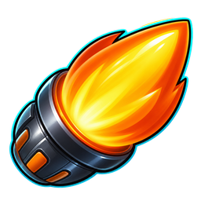
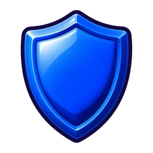
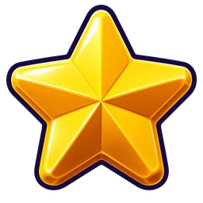

← Menu
YouBall · The Hunter (WebGL)
·
✨
👍
🔔
✨
1 2 3 = intent · A/S/D = dash/shield/decoy · R = new round
YOU
Your intent
Into the pack
1
Grab a booster
2
Escape at all costs
3
Boosters

Dash

Shield

Decoy
This is you
You keep watching the match ·
R
= new round
▸ SEE RESULTS
The 3D modules failed to load from the CDN. Open this with internet access.